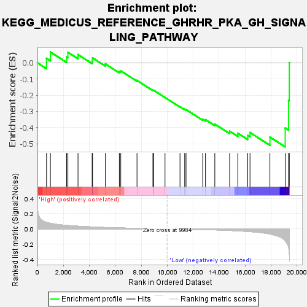
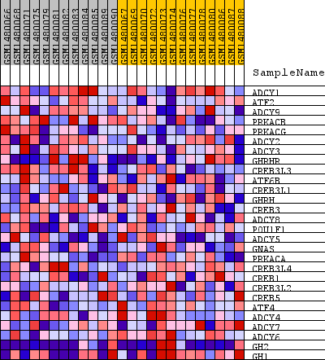
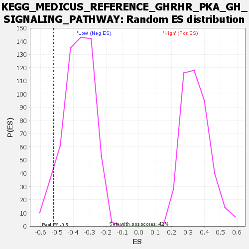

| Dataset | WG6v3.CPT1A.cls#High_versus_Low.CPT1A.cls#High_versus_Low_repos |
| Phenotype | CPT1A.cls#High_versus_Low_repos |
| Upregulated in class | Low |
| GeneSet | KEGG_MEDICUS_REFERENCE_GHRHR_PKA_GH_SIGNALING_PATHWAY |
| Enrichment Score (ES) | -0.51997644 |
| Normalized Enrichment Score (NES) | -1.401464 |
| Nominal p-value | 0.07044674 |
| FDR q-value | 0.58016497 |
| FWER p-Value | 1.0 |

| SYMBOL | TITLE | RANK IN GENE LIST | RANK METRIC SCORE | RUNNING ES | CORE ENRICHMENT | |
|---|---|---|---|---|---|---|
| 1 | ADCY1 | ADCY1 | 700 | 0.085 | 0.0281 | No |
| 2 | ATF2 | ATF2 | 999 | 0.072 | 0.0671 | No |
| 3 | ADCY9 | ADCY9 | 2249 | 0.046 | 0.0370 | No |
| 4 | PRKACB | PRKACB | 2346 | 0.044 | 0.0654 | No |
| 5 | PRKACG | PRKACG | 3126 | 0.035 | 0.0513 | No |
| 6 | ADCY2 | ADCY2 | 4216 | 0.025 | 0.0140 | No |
| 7 | ADCY3 | ADCY3 | 4245 | 0.025 | 0.0311 | No |
| 8 | GHRHR | GHRHR | 5236 | 0.018 | -0.0066 | No |
| 9 | CREB3L3 | CREB3L3 | 6312 | 0.012 | -0.0527 | No |
| 10 | ATF6B | ATF6B | 6420 | 0.012 | -0.0493 | No |
| 11 | CREB3L1 | CREB3L1 | 7672 | 0.007 | -0.1084 | No |
| 12 | GHRH | GHRH | 8898 | 0.003 | -0.1691 | No |
| 13 | CREB3 | CREB3 | 8961 | 0.003 | -0.1699 | No |
| 14 | ADCY8 | ADCY8 | 9830 | 0.000 | -0.2143 | No |
| 15 | POU1F1 | POU1F1 | 10985 | -0.003 | -0.2716 | No |
| 16 | ADCY5 | ADCY5 | 11348 | -0.004 | -0.2870 | No |
| 17 | GNAS | GNAS | 11450 | -0.005 | -0.2888 | No |
| 18 | PRKACA | PRKACA | 12737 | -0.009 | -0.3484 | No |
| 19 | CREB3L4 | CREB3L4 | 12949 | -0.010 | -0.3519 | No |
| 20 | CREB1 | CREB1 | 13668 | -0.013 | -0.3789 | No |
| 21 | CREB3L2 | CREB3L2 | 14811 | -0.021 | -0.4223 | No |
| 22 | CREB5 | CREB5 | 15440 | -0.026 | -0.4350 | No |
| 23 | ATF4 | ATF4 | 16206 | -0.034 | -0.4490 | No |
| 24 | ADCY4 | ADCY4 | 16380 | -0.036 | -0.4309 | No |
| 25 | ADCY7 | ADCY7 | 17914 | -0.067 | -0.4593 | Yes |
| 26 | ADCY6 | ADCY6 | 19092 | -0.155 | -0.4032 | Yes |
| 27 | GH2 | GH2 | 19351 | -0.244 | -0.2334 | Yes |
| 28 | GH1 | GH1 | 19409 | -0.316 | 0.0007 | Yes |

